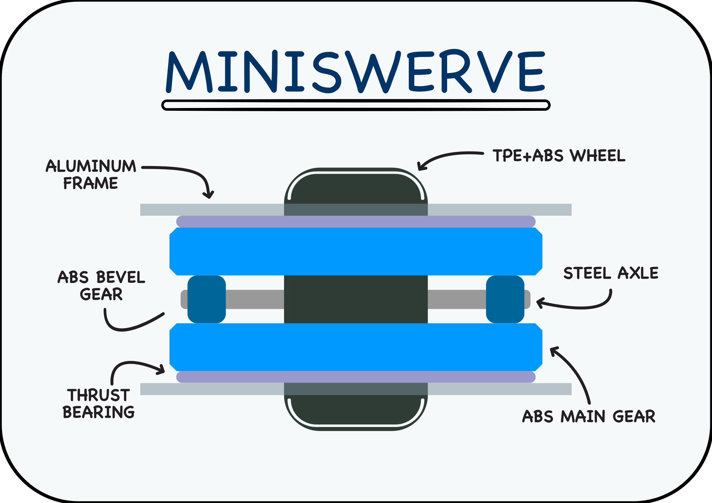
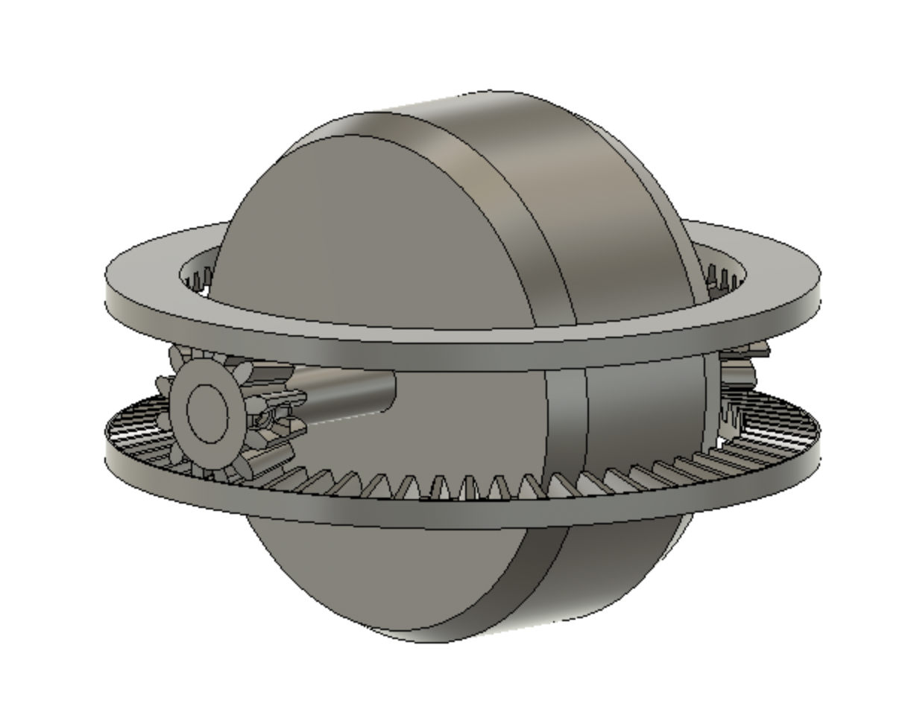
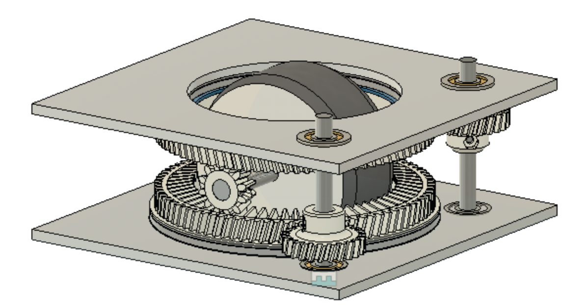
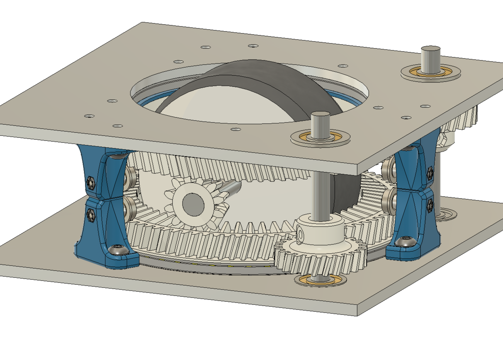
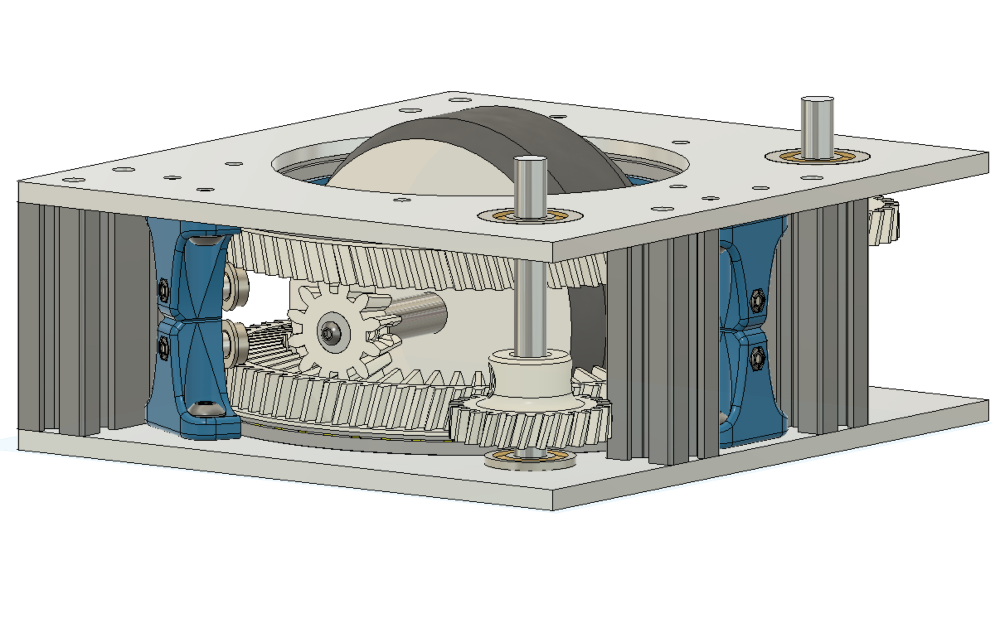
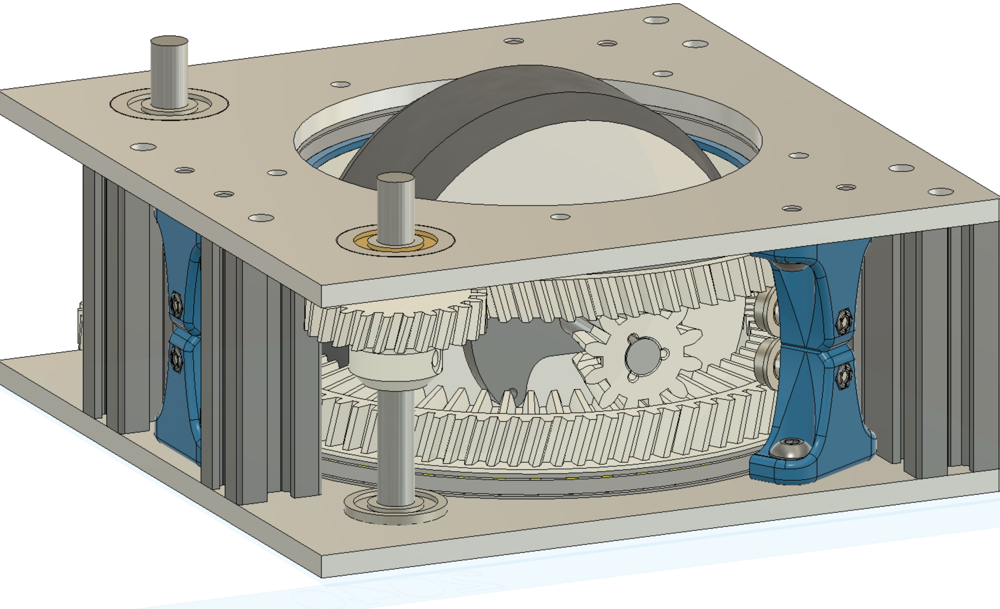
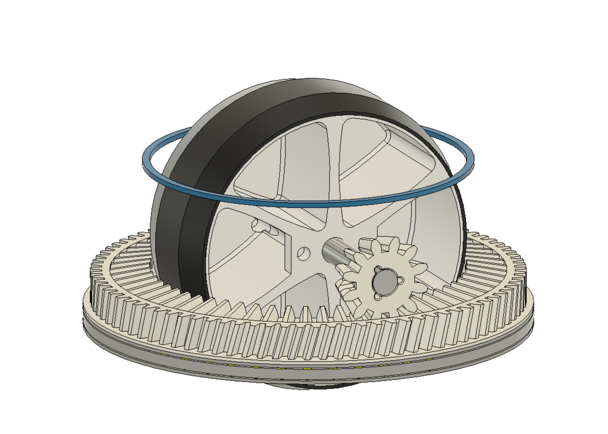
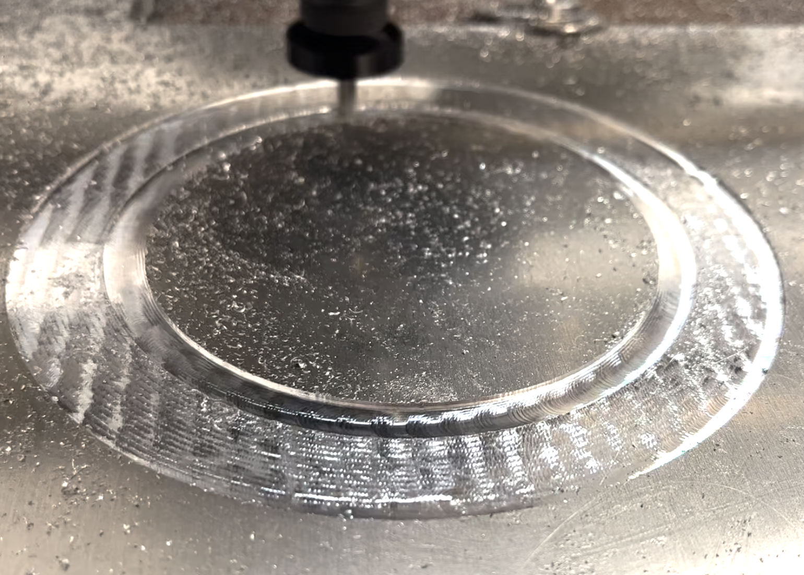

MiniSwerve


Our Drivetrain: What is swerve?
Generally any Swerve system refers to a wheel with 360° wheel steering. Our flavor of swerve is often called "differential swerve" refering to how the motors work together to orient, and drive the wheel. We'll update our sister site for software with more info on how we control this.
Big Picture: Swerve Robot
To create a comeptitive drive train, we put two identical Miniswerve 'pods' next to each other. Each of our swerve pods require two full size motors, and a classic mecanum drivetrain is 4 motors, so having 2 modules best mimics mecanum. Miniswerve is designed to be a cost comparable replacement for Mecanum, so not taking any more motors than absolutely neccesary is important: it lowers cost, complexity, and makes replacement of existing mecanum systems more accessible.
But if Miniswerve is a Mecanum replacement, why bother with the added complexity? Miniswerve should be better than a comparable mecanum drivetrain in a few ways:
- More Traction, no slip start
-
- Finer movement
- Equal top speed & torque but in all directions (instead of a bias toward Left, right, forward, backward)
- Faster turning on center
- Higher Agility
Drawbacks
Unfortunately there are some downsides, and we aren't here to hide them. So far we've struggled with:
- Ground Clearance
- Ease of assembly
- Ease of manufacturing
Hopefully as we iterate we can eliminate or mitigate these issues, and perhaps teams that choose to develop evolutions of MiniSwerve will come up with unique ways to tackle these drawbacks too!
From Concept to Robot
Miniswerve is our teams biggest accomplishment so far, even though its not finished. We've built two pods, gone through 3 major hardware iterations, countless revisions, and tackled the enormous task of programming swerve from scratch.







Today
MiniSwerve got its start early, and its taken a while to bring it to this point. It's been an awesome journey, and we made lots of progress. As of December, we are driving on the field with low downtime, and high reliability.
If you are nterested in our progress, have questions, or have feedback on our design, don't hesitate to reach out to Hardware lead Grady Conwell at gconwell@lacanadaengineeringclub.org.
 Machining prototypes of the Swerve system.
Download the latest CAD
This is pulled right from Fusion, so it may be experimental or untested. But it should be the latest. Find releases of just the bare "MiniSwerve module" in its repo, here:
MiniSwerve
" width="800" height="600" allowfullscreen="true" webkitallowfullscreen="true" mozallowfullscreen="true" frameborder="0">